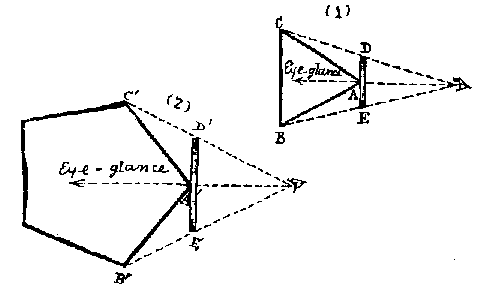
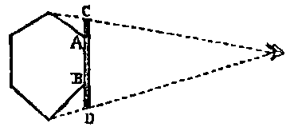

I am about to appear very inconsistent. In previous sections I have said that all figures in Flatland present the appearance of a straight line; and it was added or implied, that it is consequently impossible to distinguish by the visual organ between individuals of different classes: yet now I am about to explain to my Spaceland critics how we are able to recognize one another by the sense of sight.
If however the Reader will take the trouble to refer to the passage in which Recognition by Feeling is stated to be universal, he will find this qualification — "among the lower classes." It is only among the higher classes and in our temperate climates that Sight Recognition is practised.
That this power exists in any regions and for any classes is the result of Fog; which prevails during the greater part of the year in all parts save the torrid zones. That which is with you in Spaceland an unmixed evil, blotting out the landscape, depressing the spirits, and enfeebling the health, is by us recognized as a blessing scarcely inferior to air itself, and as the Nurse of arts and Parent of sciences. But let me explain my meaning, without further eulogies on this beneficent Element.
If Fog were non-existent, all lines would appear equally and indistinguishably clear; and this is actually the case in those unhappy countries in which the atmosphere is perfectly dry and. transparent. But wherever there is a rich supply of Fog objects that are at a distance, say of three feet, are appreciably dimmer than those at a distance of two feet eleven inches; and the result is that by careful and constant experimental observation of comparative dimness and clearness, we are enabled to infer with great exactness the configuration of the object observed.
An instance will do more than a volume of generalities to make my meaning clear.
Suppose I see two individuals approaching whose rank I wish to ascertain. They are, we will suppose, a Merchant and a Physician, or in other words, an Equilateral Triangle and a Pentagon: how am I to distinguish them?

It will be obvious, to every child in Spaceland who has touched the threshold of Geometrical Studies, that, if I can bring my eye so that its glance may bisect an angle (A) of the approaching stranger, my view will lie as it were evenly between his two sides that are next to me (viz. CA and ab), so that I shall contemplate the two impartially, and both will appear of the same size.
Now in the case of (I) the Merchant, what shall I see? I shall see a straight line dae, in which the middle point (A) Will be very bright because it is nearest to me; but on either side the line will shade away rapidly into dimness, because the sides AC and AB recede rapidly into the fog and what appear to me as the Merchant's extremities, viz. D and E, will be very dim indeed.
On the other hand in the case of (2) the Physician, though I shall here also see a line (D' A' E') with a bright centre (A'), yet it will shade away less rapidly into dimness, because the sides (A' C', A' B') recede less rapidly into the fog: and what appear to me the Physician's extremities, viz. D' and E', will not be not so dim as the extremities of the Merchant.
The Reader will probably understand from these two instances how — after a very long training supplemented by constant experience — it is possible for the well-educated classes among us to discriminate with fair accuracy between the middle and lowest orders, by the sense of sight. If my Spaceland Patrons have grasped this general conception, so far as to conceive the possibility of it and not to reject my account as altogether incredible — I shall have attained all I can reasonably expect. Were I to attempt further details I should only perplex. Yet for the sake of the young and inexperienced, who may perchance infer — from the two simple instances I have given above, of the manner in which I should recognize my Father and my Sons — that Recognition by sight is an easy affair, it may be needful to point out that in actual life most of the problems of Sight Recognition are far more subtle and complex.
If for example, when my Father, the Triangle, approaches me, he happens to present his side to me instead of his angle, then, until I have asked him to rotate, or until I have edged my eye round him, I am for the moment doubtful whether he may not be a Straight Line, or, in other words, a Woman. Again, when I am in the company of one of my two hexagonal Grandsons, contemplating one of his sides (AB) full front, it will be evident from the accompanying diagram that I shall see one whole line (AB) in comparative brightness (shading off hardly at all at the ends) and two smaller lines (CA and BD) dim throughout and shading away into greater dimness towards the extremities C and D.

But I must not give way to the temptation of enlarging on these topics. The meanest mathematician in Spaceland will readily believe me when I assert that the problems of life, which present themselves to the well-educated — when they are themselves in motion, rotating, advancing or retreating, and at the same time attempting to discriminate by the sense of sight between a number of Polygons of high rank moving in different directions, as for example in a ball- room or conversazione — must be of a nature to task the angularity of the most intellectual, and amply justify the rich endowments of the Learned Professors of Geometry, both Static and Kinetic, in the illustrious University of Wentbridge, where the Science and Art of Sight Recognition are regularly taught to large classes of the Žlite of the States.
It is only a few of the scions of our noblest and wealthiest houses, who are able to give the time and money necessary for the thorough prosecution of this noble and valuable Art. Even to me, a Mathematician of no mean standing, and the Grandfather of two most hopeful and perfectly regular Hexagons, to find myself in the midst of a crowd of rotating Polygons of the higher classes, is occasionally very perplexing. And of course to a common Tradesman, or Serf, such a sight is almost as unintelligible as it would be to you, my Reader, were you suddenly transported into our country.
In such a crowd you could see on all sides of you nothing but a Line, apparently straight, but of which the parts would vary irregularly and perpetually in brightness or dimness. Even if you had completed your third year in the Pentagonal and Hexagonal classes in the University, and were perfect in the theory of the subject, you would still find that there was need of many years of experience, before you could move in a fashionable crowd without jostling against your betters, whom it is against etiquette to ask to "feel," and who, by their superior culture and breeding, know all about your movements, while you know very little or nothing about theirs. In a word, to comport oneself with perfect propriety in Polygonal society, one ought to be a Polygon oneself. Such at least is the painful teaching of my experience.
It is astonishing how much the Art — or I may almost call it instinct — of Sight Recognition is developed by the habitual practice of it and by the avoidance of the custom of "Feeling." Just as, with you, the deaf and dumb, if once allowed to gesticulate and to use the hand-alphabet, will never acquire the more difficult but far more valuable art of lipspeech and lip-reading, so it is with us as regards "Seeing" and "Feeling." None who in early life resort to "Feeling" will ever learn "Seeing" in perfection.
For this reason, among our Higher Classes, "Feeling" is discouraged or absolutely forbidden. From the cradle their children, instead of going to the Public Elementary schools (where the art of Feeling is taught,) are sent to higher Seminaries of an exclusive character; and at our illustrious University, to "feel" is regarded as a most serious fault, involving Rustication for the first offence, and Expulsion for the second.
But among the lower classes the art of Sight Recognition is regarded as an unattainable luxury. A common Tradesman cannot afford to let his son spend a third of his life in abstract studies. The children of the poor are therefore allowed to "feel" from their earliest years, and they gain thereby a precocity and an early vivacity which contrast at first most favourably with the inert, undeveloped, and listless behaviour of the half-instructed youths of the Polygonal class; but when the latter have at last completed their University course, and are prepared to put their theory into practice, the change that comes over them may almost be described as a new birth, and in every art, science, and social pursuit they rapidly overtake and distance their Triangular competitors.
Only a few of the polygonal Class fail to pass the Final Test or Leaving Examination at the University. The condition of the unsuccessful minority is truly pitiable. Rejected from the higher class, they are also despised by the lower. They have neither the matured and systematically trained powers of the Polygonal Bachelors and Masters of Arts, nor yet the native precocity and mercurial versatility of the youthful Tradesman. The professions, the public services, are closed against them; and though in most States they are not actually debarred from marriage, yet they have the greatest difficulty in forming suitable alliances, as experience shews that the offspring of such unfortunate and ill-endowed parents is generally itself unfortunate, if not positively Irregular.
It is from these specimens of the refuse of our Nobility that the great Tumults and Seditions of past ages have generally derived their leaders; and so great is the mischief thence arising that an increasing minority of our more progressive Statesmen are of opinion that true mercy would dictate their entire suppression, by enacting that all who fail to pass the Final Examination of the University should be either imprisoned for life, or extinguished by a painless death.
But I find myself digressing into the subject of Irregularities, a matter of such vital interest that it demands a separate section.
Next: Chapter 7